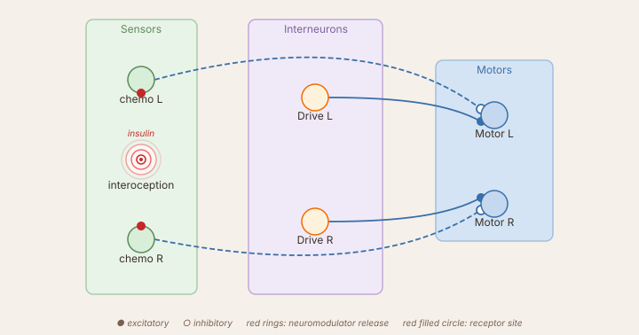

Neuromodulators
Synaptic weights control where a signal goes. A neuromodulator controls how strongly a layer responds — without a direct synapse to every target. A single slow signal can raise or lower the sensitivity of an entire pathway depending on the animal's internal state.
This tutorial builds a simplified FeedingBrain: a creature that approaches food, eats, and gradually loses interest as it fills up — because interoception suppresses chemosensation.
The circuit

Three pathways share the motor:
| Pathway | Connection | Behaviour |
|---|---|---|
food → motor |
−I (same-side inhibition) |
Approach: more food on right reduces right motor → robot turns right |
Drive → motor |
+50 to both |
Baseline forward motion even without stimulus |
intero → saciation → releases insulin → suppresses food |
pre-synaptic, −1.0 | Satiety loop: prolonged feeding silences the food-seeking drive |
A dashed line is the neuromodulator — it carries no weight matrix, only a scalar gain signal released by saciation each tick.
Code
import numpy as np
from brain_base import BaseBrain, Param
from sensors import GradientSensor, InteroceptiveSensor
from neurons import SumLayer, ConstantLayer, LeakyLayer
class FeedingBrainSimple(BaseBrain):
sensors = [
GradientSensor(n=2, angle_spread=0.4, gradient='A', name='food',
modulators=[('insulin', -1.0, 'pre')]), # (1)
InteroceptiveSensor(gradient='A', name='intero'),
]
drive = ConstantLayer(value=1.0, n=1, name='drive')
saciation = LeakyLayer(
tau_rise=10.0, tau_decay=100.0, activation='relu', n=1,
name='saciation',
neuromodulator_transmitter='insulin', # (2)
)
motor = SumLayer(activation='linear', n=2, name='motor')
layers = [drive, saciation, motor]
speed = Param(50.0, 0, 100, step=1.0, desc='Base motor speed')
connections = [
('food', 'motor', -np.eye(2)), # (3)
('drive', 'motor', np.ones((2, 1))), # (4)
('intero', 'saciation', np.array([[0.02]])), # (5)
]
def setup(self):
pass
def loop(self, dt):
self.step_network(dt)
mL, mR = self.motor.output * self.speed
return float(mL), float(mR)
fooddeclares it is suppressed by'insulin'at the pre-synaptic site. Its effective contribution to the motor becomesfood_output × (1 − 1.0 × insulin). When insulin → 1, chemosensation is fully silenced — the robot is "blind" to food.saciationreleases'insulin'by publishing its mean output to the neuromodulator bus every tick.tau_rise=10 s→ fills slowly during feeding;tau_decay=100 s→ hunger returns very slowly once the robot leaves the food area.−np.eye(2)= same-side inhibition. Inhibiting the ipsilateral motor against the constant drive steers the robot toward the stimulated side. This is the approach (not avoidance) wiring.np.ones((2,1))broadcasts the single Drive neuron to both motors. Scale byself.speedinloop().- Weight 0.02 keeps
saciationfrom saturating immediately — it fills over many seconds of sustained contact with gradient A patches.
What to observe
- Place several gradient-A patches in the arena and run the brain.
- The robot approaches patches and slows as it enters them.
- Watch
saciationin the oscilloscope — it rises slowly while the robot feeds. - As insulin climbs, the food sensor's contribution shrinks and the approach drive fades.
- Once
saciationis high, the robot drifts forward without food-seeking. Over ~100 s, saciation decays and hunger returns.
Wiring details — pre vs post
| Site | What is scaled | When to use |
|---|---|---|
'pre' |
input before integration | suppress or amplify the drive into the element — layer memory keeps running on a smaller signal |
'post' |
output after integration | gate what is sent downstream — internal dynamics are unchanged |
'none' |
nothing | declare for learning rules or visualisation only |
Both sites can appear together on the same element: modulators=[('insulin', -1.0, 'pre'), ('arousal', 2.0, 'post')].
Response mode — absolute vs derivative vs integral
Each modulator row also carries a mode, describing how the subscriber reacts to the bus value — independent of site, which only controls where the resulting gain is applied:
| Mode | Reads | Biological analogue |
|---|---|---|
'absolute' (default) |
the modulator's current value, unchanged | tonic level — sets an ongoing gain, e.g. saciation/insulin above |
'derivative' |
the tick-to-tick change in the modulator's value | phasic/onset signal — reacts to a rise, near-silent otherwise (e.g. reward-prediction-error-style dopamine) |
'integral' |
a running accumulation of the modulator's value over time | slow, sensitizing state — builds up under sustained or repeated exposure |
mode is the 4th element of the row tuple: modulators=[('insulin', -1.0, 'pre', 'absolute')]. Omitting it defaults to 'absolute' — every example on this page behaves identically whether or not mode is written out explicitly. Each (name, mode) pair tracks its own independent derivative/accumulator state, so a layer can subscribe to the same modulator twice under different modes without them interfering with each other.
Driving plasticity (learning layers only)
TDLayer/DeltaLayer/ThreeFactorLayer read their reward signal r the same way: a modulators row flagged drives_plasticity=True (5th element), with an associated threshold (6th element) — the row's mode-transformed value must cross threshold that tick to contribute to r. Combined with mode, this replaces three previously-separate mechanisms with one configurable row:
mode='absolute'+ threshold → level-gated: learns continuously for as long as the reward signal is above threshold (the classicThreeFactorLayeruse case).mode='derivative'+ threshold → onset-gated: fires only around the moment the reward signal starts rising, near-silent otherwise.mode='integral'+ threshold → cumulative-gated: only engages after sustained or repeated exposure crosses an accumulated total.
modulators=[('dopamine', 1.0, 'none', 'derivative', True, 0.1)] on a learning layer reads dopamine's derivative and drives plasticity whenever it exceeds 0.1.
Running remotely
The brain can run headlessly on any machine while the simulator runs on another. The simulator acts as a UDP sensor-motor host; this brain is the client.
From the command line:
python sim_net_client.py HOST:9001 0 networks/FeedingBrainSimple.json
# ^^^^
# Replace with the simulator machine's IP address.
# The simulator shows its IP in the status bar
# when host mode is active.
From Python — useful when you want to configure the connection programmatically:
HOST = '192.168.1.10' # ← simulator machine's IP address
PORT = 9001 # default SimNet port
from sim_net_client import SimNetClient
client = SimNetClient(host=HOST, host_port=PORT,
local_port=PORT + 1, slot=0)
client.start()
# The client's recv thread handles sensor packets and sends motor commands
# back automatically when used in headless (run_blocking) mode.
slot=0 is the agent index on the host side. If multiple remote brains connect simultaneously, each uses a different slot number.
Going further
- See the full FeedingBrain for the two-timescale bumper reflex added on top of this satiety loop.
- Add a temperature sensor (
gradient='B',+Iwiring) to give the robot a secondary drive that competes with food-seeking as insulin rises. - Chain modulators: a fast
'arousal'signal (τ ≈ 0.5 s) from aCollisionSensorcan amplify the motor path while insulin simultaneously suppresses chemosensation.